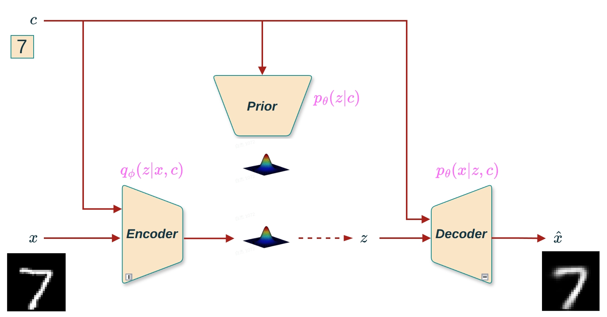
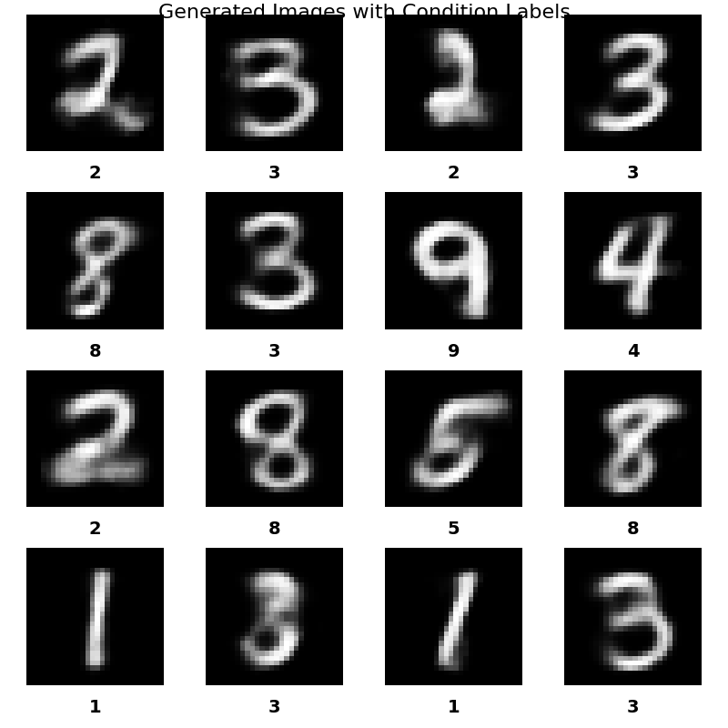

接下来进行CVAE的实现。CVAE在VAE的基础上引入条件变量 \(c\)，实现可控的条件生成。

图1 CVAE的完整架构图
根据理论篇的内容，CVAE的ELBO可以表示为:
\[\mathcal{L}(x,c; \theta, \phi) = \mathbb{E}_{z \sim q_\phi(z|x,c)}[\log p_\theta(x|z,c)] - \text{KL}(q_\phi(z|x,c) \| p_\theta(z|c))\]
CVAE的目标是最大化ELBO。与VAE类似，我们将上式乘以 \(-1\) 后的式子作为损失函数:
\[\text{Loss}(x,c; \theta, \phi) = -\mathbb{E}_{z \sim q_\phi(z|x,c)}[\log p_\theta(x|z,c)] + \text{KL}(q_\phi(z|x,c) \| p_\theta(z|c))\]
在实现中，我们使用MSE损失作为重构项，并使用KL散度作为正则化项。
根据条件 \(c\) 和潜在变量 \(z\) 是否独立，损失函数有两种形式:
情况1:\(p(z|c) = p(z) = \mathcal{N}(0, I)\)（c和z独立）
\[\text{Loss} = \|\mathbf{x} - \hat{\mathbf{x}}\|^2 + \sum_{i=1}^{H}[1 + \log \sigma_i^2 - \mu_i^2 - \sigma_i^2]\]
情况2:\(p(z|c) = \mathcal{N}(\mu_{prior}(c), \sigma_{prior}^2(c))\)（c和z非独立）
\[\text{Loss} = \|\mathbf{x} - \hat{\mathbf{x}}\|^2 + \text{KL}(\mathcal{N}(\mu_q, \sigma_q^2) \| \mathcal{N}(\mu_{prior}, \sigma_{prior}^2))\]
其中KL散度的解析解为:
\[\text{KL} = \frac{1}{2}\log \frac{\sigma_{prior}^2}{\sigma_q^2} + \frac{\sigma_q^2 + (\mu_q - \mu_{prior})^2}{2\sigma_{prior}^2} - \frac{1}{2}\]
条件变量 \(c\) 需要编码成数值向量才能输入神经网络。我们实现了两种编码方式:
One-Hot编码: - 将类别索引转换为独热向量 - 例如:类别3 → \([0, 0, 0, 1, 0, 0, 0, 0, 0, 0]\)（MNIST的10个类别）
Embedding编码: - 使用可学习的嵌入层将类别索引映射为低维向量 - 例如:类别3 → 可学习的N维向量（默认5维）
class OneHotEncoder(nn.Module):
"""One-hot编码器模块"""
def __init__(self, n_classes):
super().__init__()
self.n_classes = n_classes
def forward(self, labels):
return F.one_hot(labels, num_classes=self.n_classes).float()
class ConditionEncoder(nn.Module):
"""条件编码器:支持one-hot和embedding两种编码方式"""
def __init__(self, n_classes, condition_encoding_type='onehot', embed_dim=None):
super().__init__()
self.n_classes = n_classes
self.condition_encoding_type = condition_encoding_type
if condition_encoding_type == 'embedding':
if embed_dim is None:
raise ValueError("使用embedding编码时，必须提供embed_dim参数")
self.encoder = nn.Embedding(
num_embeddings=n_classes,
embedding_dim=embed_dim,
max_norm=True
)
self.condition_dim = embed_dim
elif condition_encoding_type == 'onehot':
self.encoder = OneHotEncoder(n_classes)
self.condition_dim = n_classes
else:
raise ValueError(f"不支持的condition_encoding_type: {condition_encoding_type}")
def forward(self, labels):
if labels.dim() > 1:
labels = labels.squeeze(-1)
return self.encoder(labels)Encoder和Decoder的实现与VAE类似，但需要考虑条件的拼接:
class Encoder(nn.Module):
def __init__(self, input_dim, hidden_dim, latent_dim):
super().__init__()
self.linear = nn.Linear(input_dim, hidden_dim)
self.linear_mu = nn.Linear(hidden_dim, latent_dim)
self.linear_logvar = nn.Linear(hidden_dim, latent_dim)
def forward(self, x):
h = F.relu(self.linear(x))
mu = self.linear_mu(h)
logvar = self.linear_logvar(h)
sigma = torch.exp(0.5 * logvar)
return mu, sigma
class Decoder(nn.Module):
def __init__(self, latent_dim, hidden_dim, output_dim):
super().__init__()
self.linear1 = nn.Linear(latent_dim, hidden_dim)
self.linear2 = nn.Linear(hidden_dim, output_dim)
def forward(self, z):
h = self.linear1(z)
h = F.relu(h)
h = self.linear2(h)
x_hat = F.sigmoid(h)
return x_hat关键区别: - Encoder的输入维度:input_dim + condition_dim（当条件用于编码时） - Decoder的输入维度:latent_dim + condition_dim（条件与潜在向量拼接）
条件同时加在编码器和解码器:
class CVAE(nn.Module):
"""CVAE: 条件在编码时与输入拼接，先验 p(z) = \mathcal{N}(0, I)"""
def __init__(self, input_dim, output_dim, condition_dim, hidden_dim, latent_dim,
condition_encoder=None):
super().__init__()
self.condition_encoder = condition_encoder
self.encoder = Encoder(input_dim + condition_dim, hidden_dim, latent_dim)
self.decoder = Decoder(latent_dim + condition_dim, hidden_dim, output_dim)
def forward(self, x, c_or_labels):
# 编码条件
if self.condition_encoder is not None:
c = self.condition_encoder(c_or_labels)
else:
c = c_or_labels
# 编码: q(z|x, c)
x_c = torch.cat((x, c), dim=1)
mu, sigma = self.encoder(x_c)
z = self._reparameterize(mu, sigma)
# 解码: p(x|z, c)
z_c = torch.cat((z, c), dim=1)
x_hat = self.decoder(z_c)
return x_hat, mu, sigma
def _reparameterize(self, mu, sigma):
eps = torch.randn_like(sigma)
z = mu + eps * sigma
return z计算流程:
class CVAE1(nn.Module):
"""CVAE1: 条件只在解码时使用，编码时不用条件"""
def __init__(self, input_dim, output_dim, condition_dim, hidden_dim, latent_dim,
condition_encoder=None):
super().__init__()
self.condition_encoder = condition_encoder
self.encoder = Encoder(input_dim, hidden_dim, latent_dim) # 不使用条件
self.decoder = Decoder(latent_dim + condition_dim, hidden_dim, output_dim)
def forward(self, x, c_or_labels):
if self.condition_encoder is not None:
c = self.condition_encoder(c_or_labels)
else:
c = c_or_labels
# 编码时不使用条件: q(z|x)
mu, sigma = self.encoder(x)
z = self._reparameterize(mu, sigma)
# 解码时使用条件: p(x|z, c)
z_c = torch.cat((z, c), dim=1)
x_hat = self.decoder(z_c)
return x_hat, mu, sigma特点:潜在表示 \(z\) 与条件 \(c\) 在编码阶段独立，条件信息只影响生成过程。
当条件 \(c\) 和潜在变量 \(z\) 非独立时，需要Prior网络学习条件先验 \(p(z|c)\):
class PriorNetwork(nn.Module):
"""先验网络:学习条件先验分布 p(z|c) = \mathcal{N}(\mu_{prior}(c), \sigma_{prior}(c))"""
def __init__(self, condition_dim, hidden_dim, latent_dim):
super().__init__()
self.linear = nn.Linear(condition_dim, hidden_dim)
self.linear_mu = nn.Linear(hidden_dim, latent_dim)
self.linear_logvar = nn.Linear(hidden_dim, latent_dim)
def forward(self, c):
h = F.relu(self.linear(c))
mu_prior = self.linear_mu(h)
logvar_prior = self.linear_logvar(h)
sigma_prior = torch.exp(0.5 * logvar_prior)
return mu_prior, sigma_priorclass CVAE_prior(nn.Module):
"""CVAE with Prior Network: p(z|c) = \mathcal{N}(\mu_{prior}(c), \sigma_{prior}(c))"""
def __init__(self, input_dim, output_dim, condition_dim, hidden_dim, latent_dim,
condition_encoder=None):
super().__init__()
self.condition_encoder = condition_encoder
self.encoder = Encoder(input_dim + condition_dim, hidden_dim, latent_dim)
self.prior = PriorNetwork(condition_dim, hidden_dim, latent_dim) # 先验网络
self.decoder = Decoder(latent_dim + condition_dim, hidden_dim, output_dim)
def forward(self, x, c_or_labels):
if self.condition_encoder is not None:
c = self.condition_encoder(c_or_labels)
else:
c = c_or_labels
# 编码: q(z|x, c)
x_c = torch.cat((x, c), dim=1)
mu_q, sigma_q = self.encoder(x_c)
z = self._reparameterize(mu_q, sigma_q)
# 先验: p(z|c)
mu_prior, sigma_prior = self.prior(c)
# 解码: p(x|z, c)
z_c = torch.cat((z, c), dim=1)
x_hat = self.decoder(z_c)
return x_hat, mu_q, sigma_q, mu_prior, sigma_prior
def sample_prior(self, c_or_labels):
"""从条件先验分布采样:p(z|c) = \mathcal{N}(\mu_{prior}(c), \sigma_{prior}(c))"""
if self.condition_encoder is not None:
c = self.condition_encoder(c_or_labels)
else:
c = c_or_labels
mu_prior, sigma_prior = self.prior(c)
z = self._reparameterize(mu_prior, sigma_prior)
return zdef loss_function_wo_prior(x_hat, x, mu_q, sigma_q):
"""损失函数 - 无Prior网络情况: p(z|c) = p(z) = \mathcal{N}(0, I)"""
batch_size = x.shape[0]
# 重构损失
recon_loss = F.mse_loss(x_hat, x, reduction='sum')
# KL散度: KL(q(z|x,c) || \mathcal{N}(0, I))
kl_loss = -0.5 * torch.sum(1 + 2 * torch.log(sigma_q + 1e-8) - mu_q ** 2 - sigma_q ** 2)
return (recon_loss + kl_loss) / batch_size
def loss_function_prior(x_hat, x, mu_q, sigma_q, mu_prior, sigma_prior):
"""损失函数 - 有Prior网络情况: p(z|c) = \mathcal{N}(\mu_{prior}(c), \sigma_{prior}(c))"""
batch_size = x.shape[0]
# 重构损失
recon_loss = F.mse_loss(x_hat, x, reduction='sum')
# KL散度: KL(q(z|x,c) || p(z|c))
logvar_q = 2 * torch.log(sigma_q + 1e-8)
logvar_prior = 2 * torch.log(sigma_prior + 1e-8)
kl_loss = 0.5 * torch.sum(
logvar_prior - logvar_q +
(sigma_q ** 2 + (mu_q - mu_prior) ** 2) / (2.0 * (sigma_prior ** 2 + 1e-8)) -
1.0
)
return (recon_loss + kl_loss) / batch_size代码中的 infer1 部分展示了CVAE的重建能力:
# 模型推理1 - 从测试集采样图像，查看重构效果
if infer1:
model.eval()
with torch.no_grad():
x_test = ... # 从测试集获取样本
labels_test = ... # 获取对应的标签
# 通过 CVAE 进行编码-解码重构
x_reconstructed, mu, sigma = model(x_test, labels_test)
# 转换为图像格式用于显示
original_images = x_test.view(sample_size, 1, 28, 28).cpu()
reconstructed_images = x_reconstructed.view(sample_size, 1, 28, 28).cpu()代码说明:
model(x_test, labels_test) 进行前向传播，条件信息帮助模型更好地重建CVAE在重建时利用条件信息，相比VAE能够更准确地重建特定类别的图像。
代码中的 infer2 部分展示了CVAE的条件生成能力:
# 模型推理2 - 生成新图像（带条件标签）
if infer2:
model.eval()
with torch.no_grad():
# 1. 随机采样条件（0-9的数字）
conditions = torch.randint(0, n_classes, (sample_size,)).to(device)
# 2. 从先验分布采样潜在向量
if model_type in ['cvae_prior', 'cvae1_prior']:
# 使用Prior网络:从 p(z|c) 采样
z = model.sample_prior(conditions)
c = condition_encoder(conditions)
else:
# 标准形式:从 p(z) = \mathcal{N}(0, I) 采样
z = torch.randn(sample_size, latent_dim).to(device)
c = condition_encoder(conditions)
# 3. 将潜在向量和条件拼接后输入decoder
z_with_condition = torch.cat((z, c), dim=1)
x = model.decoder(z_with_condition)
generated_images = x.view(sample_size, 1, 28, 28).cpu()
图2 CVAE的生成能力，基于条件生成对应的图像
关键优势: - 可控生成:通过指定条件 \(c\)（如数字标签），可以生成特定类别的图像 - 条件先验:如果使用Prior网络，不同条件对应不同的先验分布 \(p(z|c)\) - 结果:生成的图像不仅是有意义的，而且是符合指定条件的
| 特性 | VAE | CVAE |
|---|---|---|
| 生成方式 | 无条件生成，完全随机 | 条件生成，可控 |
| 潜在空间 | 固定的标准正态分布 \(p(z) = \mathcal{N}(0, I)\) | 可依赖条件的分布 \(p(z\|c)\) |
| 编码器输入 | 仅输入 \(x\) | 输入 \(x\) 和条件 \(c\) |
| 解码器输入 | 仅潜在向量 \(z\) | 潜在向量 \(z\) 和条件 \(c\) |
| 生成控制 | 无法控制生成内容 | 可通过条件 \(c\) 控制生成类别 |
| 应用场景 | 随机生成、数据压缩 | 条件生成、可控创作 |
核心思想:CVAE通过在生成过程中引入条件信息，实现了从“无条件随机生成”到“条件可控生成”的跨越。这使得CVAE不仅可以生成新数据，还可以根据用户指定的条件生成特定类别的数据。
代码中实现了四种CVAE变体:
| 变体 | 编码器 | 解码器 | 先验分布 | 特点 |
|---|---|---|---|---|
| CVAE | \(q(z\|x,c)\) | \(p(x\|z,c)\) | \(p(z) = \mathcal{N}(0,I)\) | 标准形式，条件影响编码和解码 |
| CVAE1 | \(q(z\|x)\) | \(p(x\|z,c)\) | \(p(z) = \mathcal{N}(0,I)\) | 条件只影响解码，\(z\)与\(c\)编码时独立 |
| CVAE_prior | \(q(z\|x,c)\) | \(p(x\|z,c)\) | \(p(z\|c) = \mathcal{N}(\mu(c),\sigma(c))\) | 有Prior网络，条件先验 |
| CVAE1_prior | \(q(z\|x)\) | \(p(x\|z,c)\) | \(p(z\|c) = \mathcal{N}(\mu(c),\sigma(c))\) | 条件只影响解码，但有Prior网络 |
选择建议: - 标准CVAE : 适合大多数条件生成任务 - CVAE1 : 当希望潜在表示与条件解耦时使用 - CVAE_prior : 当不同条件需要不同的潜在空间结构时使用 - CVAE1_prior : 结合CVAE1和Prior网络的优点
条件变分自编码器（CVAE） 通过以下关键创新实现了可控生成:
CVAE的成功证明了条件信息对于可控生成的重要性，为后续的条件生成模型（如条件GAN、条件扩散模型）奠定了基础。